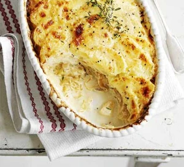

Potato Gratin

Description
A dish of sliced potatoes baked in cream, cheese and garlic, baked in the oven
Ingrediants
- 2 tbsp olive oil
- 2 onions, thingly sliced
- 2 thyme sprigs, leaves picked, plus extra
- 150ml double chream
- 175ml milk
- 1.25kg large potatos, peeled and thinly sliced
- butter, for greasing
- 100g crème fraîche
- 85g parmesan, grated
Steps
- Up to 2 days before serving, heat oven to 200C/180C fan/gas 6. Heat the oil in a large frying pan. Add the onions and thyme, cover, and cook over a gentle heat for 10-15 mins until softened and caramelised. Pour the cream and milk into a large bowl and season well. Add the potatoes and mix to combine.
- Butter a 23 x 28cm ovenproof dish, then layer in half the potatoes. Spread the onion mixture on top, then layer on the remaining potatoes. Press down with your hands. Pour over the milk mixture, which should come just level with the potatoes. If not, add a little more milk until it does. Cover with foil, then bake for 11⁄2 hrs until tender. Remove from the oven and leave to cool. Cover and store in the fridge.
- On the day, heat the oven to 220C/200C fan/gas 7. Uncover the gratin, spread the crème fraîche on top, then sprinkle over the Parmesan. Put in the oven and cook for 30 mins until the cheese is melted, the top crisp and golden brown, and the gratin piping hot. Serve garnished with extra thyme.